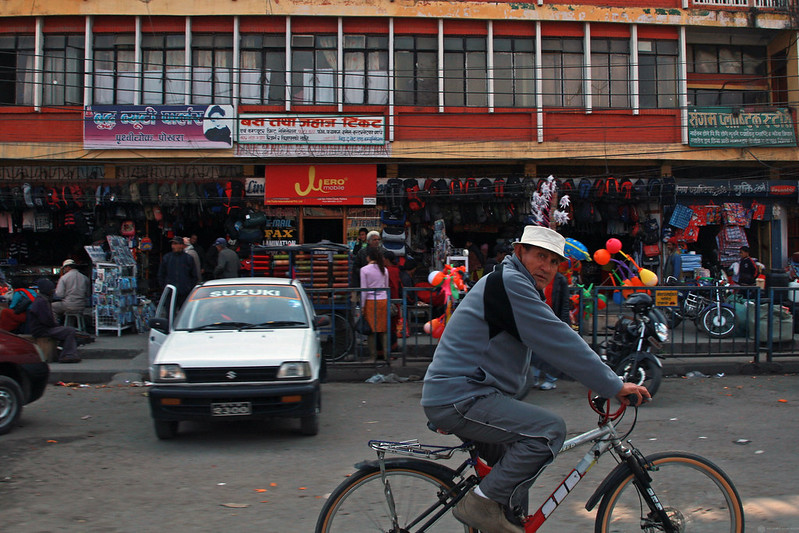
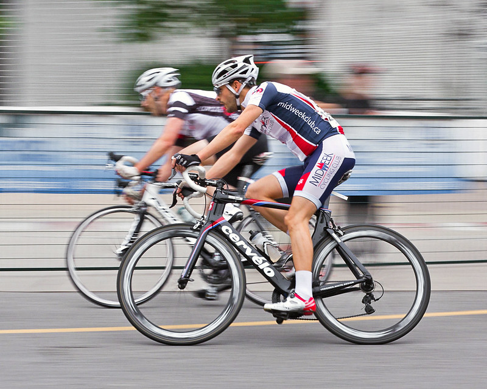
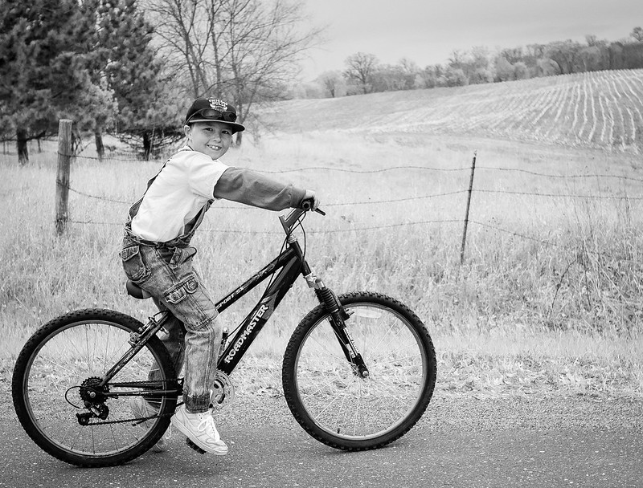
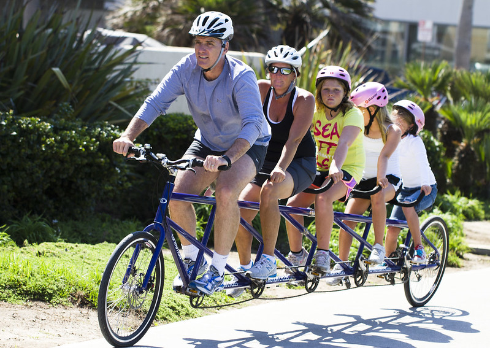
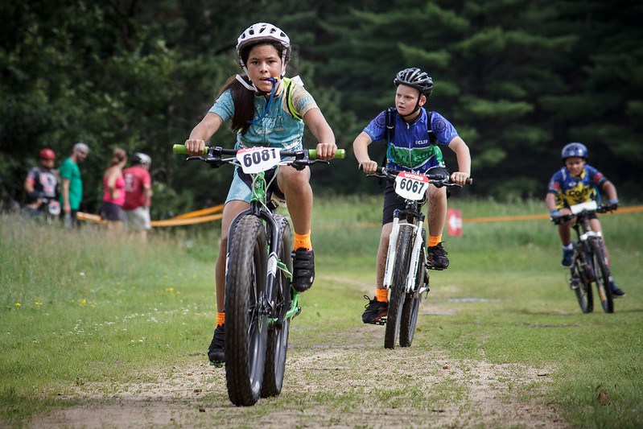
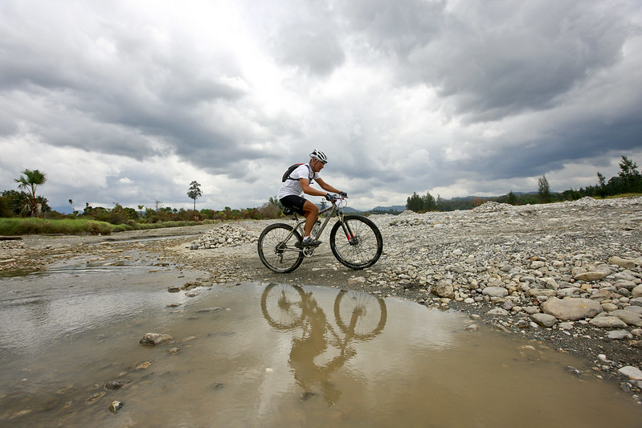
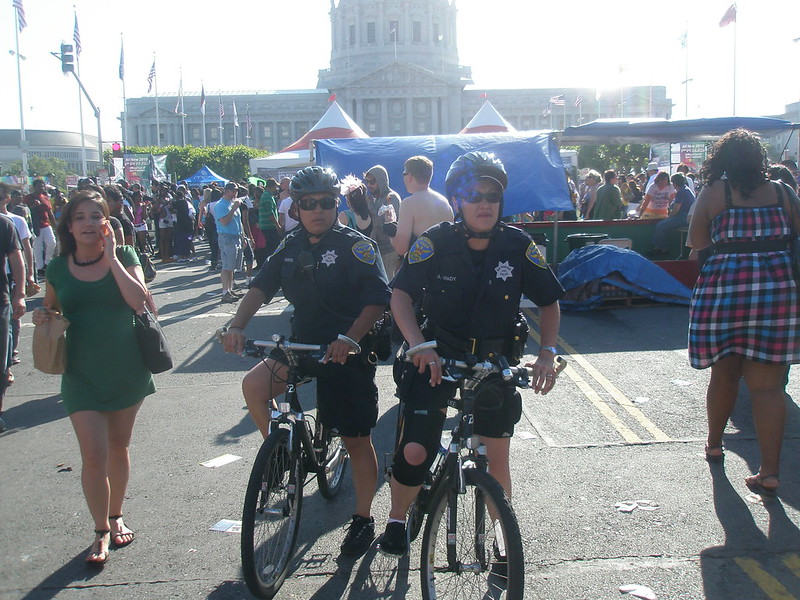
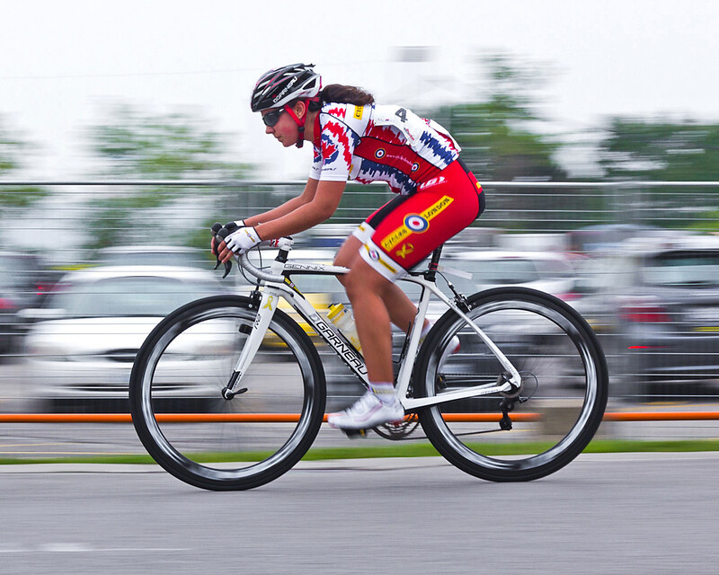
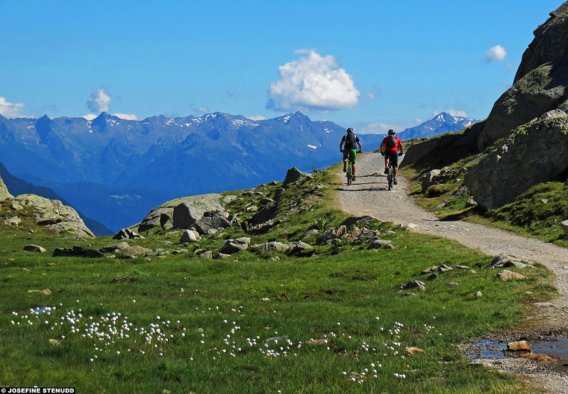

My bicycle is just perfect. Every day is a good day riding around the market on it. Thanks #tuftsbicycle
--Enrique (Bolivia)
--Enrique (Bolivia)


This Cervelo from #tuftsbicycle was exactly what I need in a bike. I won this race thanks to it!
--Stan (Napa Valley)
--Stan (Napa Valley)
Got my son his first bike...he loves it! The kid's got miles and miles of fun ahead of him.
--Tommy (Gainesville)
--Tommy (Gainesville)


Our favorite family activity! No other store except #tuftsbicycle could've made our dreams of this bike into a reality.
--The Staceys (Kansas City)
--The Staceys (Kansas City)
Jessie's first race. She killed it, 3rd overall! Big thanks to #tuftsbicycle for getting it all set for the big day.
--Joey (Wilmington)
--Joey (Wilmington)


Favorite ride in the world! S/O to that beautiful machine of a bike (cred #tuftsbicycle). Can't wait to be back soon!
--Dale (Jacksonville)
--Dale (Jacksonville)
Bike patrol for the day. Big up to #tuftsbicycle for backing the blue with their custom police bikes.
--Trayce (Oakland)
--Trayce (Oakland)


Gran Fondo was a success! Top 10 for females, and 4th in my age division. #tuftsbicycle ftw!!
--Jen (Huntsville)
--Jen (Huntsville)
Took the boys out for a ride today. Don't think they love it quite as much as me...maybe one day ha!
--Nico (Mesa)
--Nico (Mesa)


I could stare at this view for an eternity! Those #tuftsbicycles sure are pretty...oh and the background is nice too ;P
--Bentley (Hartford)
--Bentley (Hartford)